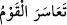

aradaki nikâh ilişkisi sürdüğü ve iddet beklediği sürede emzirme karşılığında anneye
ücret vermek câiz değildir. “Onlara” şâyet isterlerse ya da umarlarsa emzirmelerine
karşılık “ücretlerini verin.” Çünkü onlar bu takdirde sütanne hükmündedirler.
el-Lübab’ta ifâde edildiğine göre koca karısını boşadığında kadın çocuğunu emzirmek
mecburiyetinde değildir, ancak çocuk annesinden başka bir kadının memesini almıyorsa
bu takdirde annenin onu emzirmesi vâcib olur. Taraflar ücrette anlaşamayıp da kadın
ecr-i misil talep etse, baba ise bundan kaçınıp sadece ücretsiz gönül rızâsıyla
emzirmesini istese, anne ecr-i misil almaya daha lâyıktır. Çünkü baba ücret almayan
gönüllü bir sütanne bulamamıştır.
Buna karşılık baba, anneyi ecr-i misle dâvet etse, anne de bunu kabul etmeyerek daha
fazlasını istese, babanın talebi daha önceliklidir. Buna karşılık baba, annenin ücretini
eli dar olduğu için veremese kadın onu emzirmeye icbar olunur.
Çocuk babaya âid olduğu halde niçin hürriyet ve kölelikte ona tâbi olmayıp anneye
tâbi oluyor? denilirse buna şöyle cevap verilir: Çünkü anne câriye olup babadan başka,
birinin mülkiyetinde ise çocuk,-babası hür bile olsa-anneye mâlik olan kişinin mülkü
olur.
Anne hür ise -baba köle bile olsa- çocuk hür olur. Fıkıh bilginleri bunu şöyle izah
etmişlerdir: Annenin suyu, babanın suyuna/spermine mülkiyet konusunda tercih
olunmuştur. Çünkü annenin suyu belli bir yerde durmaktadır; oysa babanınki malum
değildir. Bu mesele ifâde ediyor ki mülkiyet babalığa galiptir. Çünkü dinde hükümler
şer’idir, akli değildir. Gerçek bilgi bu şeriatı koyan şâri’in katındadır. O dilediğini
yapar ve dilediğine hükmeder.
Ey anne ve babalar “aranızda uygun bir şekilde anlaşın.” Birbirinizle müşâvere
edin ve danışın. Bu şöyle olur: Biriniz diğerinize onu emzirme ve ücret ödeme
konusunda güzellikle davransın, hoşgörülü olsun. Baba verecek olduğu ücreti kısmaya
kalkışmasın. Anne de işi zora koşmasın. Çünkü çocuk hem annenin ve hem de
babanındır. Anne ve baba çocuk üzerinde ona şefkatle davranma noktasında
birbirleriyle ortaktırlar.
“İ’timâr”, “teâmur” mânâsınadır, bu tıpkı “iştivâr” kelimesinin “teşâvur” mânâsına
olduğu gibidir. Arapçada “i’temere’l-kavmu ve teâmeru” denir ki mânâsı bir topluluk
birbiriyle danışmalarda bulundu demektir. Bir başka ifâdeyle “iftiâl” babı bazen
“tefâul” mânâsına kullanılır işte bu âyet-i kerîmede bu kabildendir.
“Eğer anlaşamazsanız çocuğu” Keşşaf’ta ifâde edildiği üzere baba için anneden
“başka bir kadın emzirecektir.” Arapçada “/teâsere’l-kavmu” denilir ki
mânâsı bir topluluk herhangi bir meseleyi zora koşmayı arzuladılar demektir. Daha açık
bir ifâde ile süt verme konusunda anne ve baba güçlükle karşılaşır, yâni koca ücret veya
kadın süt vermezse, demektir ki buna göre âyetin mânâsı, eğer işi zora koşup
anlaşamazsanız, demek olur.
“Çocuğu onun için” yâni baba için şeklinde yaptığımız tefsir “emzirmeyi